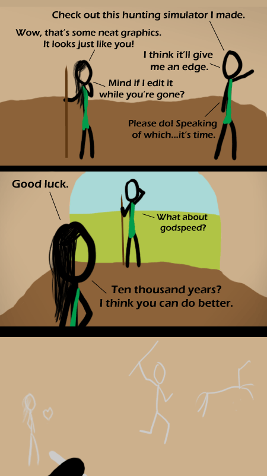

Comic JK 324
When I Feel Like It
⇤
<
?
>
⇥

⇤
<
?
>
⇥
Forum
.
RSS
.
Digg
.
Facebook
.
Reddit
.
Twitter
.
Stumbleupon
Enter your thoughts on number 324 here. Please, no spamming, trolling, or phreaking, or creating hunting simulators. Your mother tried to draw stick figures, but they were inferior to these. I always knew that those ancient artists were drawing truly accurate representations... And God said unto the people of the river, "Lo, I have upgraded the polygons." And there was much rejoicing, though the posterity never quite understood the self-portraits made before the change." >That there is great. Although I think he must have upgraded the polygons at least 4 times... I liked your previous work better. This is getting too biblical. >Yeah, move on to something else already! >>Actually, I feel that it's moved away from biblical stuff with this comic. The problem with religious stuff in jokes is that people that believe the religion don't want it to be made into a joke and get offended, and people that don't beleive it don't want to hear about it and get offended. Everyone should just lighten up a little. >Actually, I am and I still find it funny. He's not being offencive, he's just writing good stuff. The bible isn't the joke in this comic. the godspeed reference is amusing, but the punchline is how we assume their art was primitive, but it may have been 100% accurate if they were badly rendered. yeah, sure, there's the humor... but i find the editions she made kinda sweet. >I agree, especially the laugh heart.